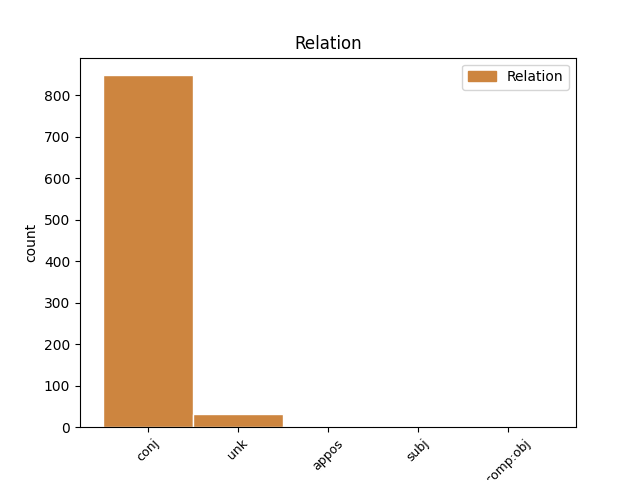

Distribution of features within this leaf

Agreement Rules sorted by frequency.
- When the dependent token is the conjunct(conj) of the head token, and the head token is NOUN
1 Maar _ _ _ _ 0 _ _ _
2 ons _ _ _ _ 0 _ _ _
3 reis _ _ _ _ 0 _ _ _
4 is _ _ _ _ 0 _ _ _
5 een _ _ _ _ 0 _ _ _
6 van _ _ _ _ 0 _ _ _
7 hoop hoop NOUN NA Number=Sing 0 _ _ _
8 en _ _ _ _ 0 _ _ _
9 volharding volharding NOUN NA Number=Sing 7 conj _ SpaceAfter=No
10 . _ _ _ _ 0 _ _ _
1 As _ _ _ _ 0 _ _ _
2 ons _ _ _ _ 0 _ _ _
3 terugkyk _ _ _ _ 0 _ _ _
4 oor _ _ _ _ 0 _ _ _
5 die _ _ _ _ 0 _ _ _
6 afgelope _ _ _ _ 0 _ _ _
7 15 _ _ _ _ 0 _ _ _
8 jaar _ _ _ _ 0 _ _ _
9 wil _ _ _ _ 0 _ _ _
10 ek _ _ _ _ 0 _ _ _
11 graag _ _ _ _ 0 _ _ _
12 erkenning _ _ _ _ 0 _ _ _
13 gee _ _ _ _ 0 _ _ _
14 aan _ _ _ _ 0 _ _ _
15 President _ _ _ _ 0 _ _ _
16 Nelson _ _ _ _ 0 _ _ _
17 Mandela _ _ _ _ 0 _ _ _
18 en _ _ _ _ 0 _ _ _
19 President president NOUN NSE Number=Sing 0 _ _ _
20 Thabo Thabo PROPN NEE Number=Sing 19 unk _ _
21 Mbeki _ _ _ _ 0 _ _ _
22 se _ _ _ _ 0 _ _ _
23 verbintenis _ _ _ _ 0 _ _ _
24 en _ _ _ _ 0 _ _ _
25 harde _ _ _ _ 0 _ _ _
26 werk _ _ _ _ 0 _ _ _
27 , _ _ _ _ 0 _ _ _
28 asook _ _ _ _ 0 _ _ _
29 die _ _ _ _ 0 _ _ _
30 talle _ _ _ _ 0 _ _ _
31 vroue _ _ _ _ 0 _ _ _
32 en _ _ _ _ 0 _ _ _
33 mans _ _ _ _ 0 _ _ _
34 wat _ _ _ _ 0 _ _ _
35 'n _ _ _ _ 0 _ _ _
36 rol _ _ _ _ 0 _ _ _
37 gespeel _ _ _ _ 0 _ _ _
38 het _ _ _ _ 0 _ _ _
39 om _ _ _ _ 0 _ _ _
40 die _ _ _ _ 0 _ _ _
41 demokratiese _ _ _ _ 0 _ _ _
42 staatstuig _ _ _ _ 0 _ _ _
43 te _ _ _ _ 0 _ _ _
44 stuur _ _ _ _ 0 _ _ _
45 : _ _ _ _ 0 _ _ _
46 in _ _ _ _ 0 _ _ _
47 die _ _ _ _ 0 _ _ _
48 Uitvoerende _ _ _ _ 0 _ _ _
49 Raad _ _ _ _ 0 _ _ _
50 en _ _ _ _ 0 _ _ _
51 die _ _ _ _ 0 _ _ _
52 Administrasie _ _ _ _ 0 _ _ _
53 , _ _ _ _ 0 _ _ _
54 die _ _ _ _ 0 _ _ _
55 wetgewers _ _ _ _ 0 _ _ _
56 op _ _ _ _ 0 _ _ _
57 die _ _ _ _ 0 _ _ _
58 drie _ _ _ _ 0 _ _ _
59 regeringsvlakke _ _ _ _ 0 _ _ _
60 en _ _ _ _ 0 _ _ _
61 die _ _ _ _ 0 _ _ _
62 Regbank _ _ _ _ 0 _ _ _
63 ; _ _ _ _ 0 _ _ _
64 gedryf _ _ _ _ 0 _ _ _
65 deur _ _ _ _ 0 _ _ _
66 die _ _ _ _ 0 _ _ _
67 begeerte _ _ _ _ 0 _ _ _
68 om _ _ _ _ 0 _ _ _
69 die _ _ _ _ 0 _ _ _
70 lewenskwaliteit _ _ _ _ 0 _ _ _
71 van _ _ _ _ 0 _ _ _
72 alle _ _ _ _ 0 _ _ _
73 Suid-Afrikaners _ _ _ _ 0 _ _ _
74 te _ _ _ _ 0 _ _ _
75 verbeter _ _ _ _ 0 _ _ _
76 . _ _ _ _ 0 _ _ _
1 Sodra _ _ _ _ 0 _ _ _
2 'n _ _ _ _ 0 _ _ _
3 persoon _ _ _ _ 0 _ _ _
4 belasbare _ _ _ _ 0 _ _ _
5 inkomste _ _ _ _ 0 _ _ _
6 verdien _ _ _ _ 0 _ _ _
7 wat _ _ _ _ 0 _ _ _
8 nie _ _ _ _ 0 _ _ _
9 aan _ _ _ _ 0 _ _ _
10 SIBW- _ _ _ _ 0 _ _ _
11 of _ _ _ _ 0 _ _ _
12 LBS-aftrekkings _ _ _ _ 0 _ _ _
13 ( _ _ _ _ 0 _ _ _
14 soos _ _ _ _ 0 _ _ _
15 inkomste _ _ _ _ 0 _ _ _
16 uit _ _ _ _ 0 _ _ _
17 rente _ _ _ _ 0 _ _ _
18 , _ _ _ _ 0 _ _ _
19 verhuring _ _ _ _ 0 _ _ _
20 of _ _ _ _ 0 _ _ _
21 besigheid _ _ _ _ 0 _ _ _
22 ) _ _ _ _ 0 _ _ _
23 onderworpe _ _ _ _ 0 _ _ _
24 is _ _ _ _ 0 _ _ _
25 nie _ _ _ _ 0 _ _ _
26 moet _ _ _ _ 0 _ _ _
27 hy hy PRON PDHENP Case=Nom|Number=Sing|Person=3|PronType=Prs 0 _ _ _
28 of _ _ _ _ 0 _ _ _
29 sy sy PRON PDVENP Case=Nom|Number=Sing|Person=3|PronType=Prs 27 conj _ _
30 voorlopige _ _ _ _ 0 _ _ _
31 belasting _ _ _ _ 0 _ _ _
32 op _ _ _ _ 0 _ _ _
33 hierdie _ _ _ _ 0 _ _ _
34 inkomste _ _ _ _ 0 _ _ _
35 betaal _ _ _ _ 0 _ _ _
36 . _ _ _ _ 0 _ _ _
1 Hierbenewens _ _ _ _ 0 _ _ _
2 sal _ _ _ _ 0 _ _ _
3 Telkom _ _ _ _ 0 _ _ _
4 , _ _ _ _ 0 _ _ _
5 as _ _ _ _ 0 _ _ _
6 deel _ _ _ _ 0 _ _ _
7 van _ _ _ _ 0 _ _ _
8 die _ _ _ _ 0 _ _ _
9 poging _ _ _ _ 0 _ _ _
10 om _ _ _ _ 0 _ _ _
11 die _ _ _ _ 0 _ _ _
12 besigheidsproses-uitbestedingsektor besigheidsproses-uitbestedingsektor NOUN NSE Number=Sing 0 _ _ _
13 ( _ _ _ _ 0 _ _ _
14 BPO-sektor BPO-sektor NOUN NSE Number=Sing 12 appos _ SpaceAfter=No
15 ) _ _ _ _ 0 _ _ _
16 te _ _ _ _ 0 _ _ _
17 vergroot _ _ _ _ 0 _ _ _
18 , _ _ _ _ 0 _ _ _
19 'n _ _ _ _ 0 _ _ _
20 spesiale _ _ _ _ 0 _ _ _
21 lae _ _ _ _ 0 _ _ _
22 tarief _ _ _ _ 0 _ _ _
23 vir _ _ _ _ 0 _ _ _
24 internasionale _ _ _ _ 0 _ _ _
25 bandwydte _ _ _ _ 0 _ _ _
26 hef _ _ _ _ 0 _ _ _
27 aan _ _ _ _ 0 _ _ _
28 10 _ _ _ _ 0 _ _ _
29 ontwikkelingsoproepsentra _ _ _ _ 0 _ _ _
30 wat _ _ _ _ 0 _ _ _
31 elk _ _ _ _ 0 _ _ _
32 1 _ _ _ _ 0 _ _ _
33 000 _ _ _ _ 0 _ _ _
34 werknemers _ _ _ _ 0 _ _ _
35 in _ _ _ _ 0 _ _ _
36 diens _ _ _ _ 0 _ _ _
37 het _ _ _ _ 0 _ _ _
38 . _ _ _ _ 0 _ _ _
1 'n _ _ _ _ 0 _ _ _
2 Buitelandse _ _ _ _ 0 _ _ _
3 visvaartuig _ _ _ _ 0 _ _ _
4 is _ _ _ _ 0 _ _ _
5 'n _ _ _ _ 0 _ _ _
6 vaartuig _ _ _ _ 0 _ _ _
7 wat _ _ _ _ 0 _ _ _
8 deur _ _ _ _ 0 _ _ _
9 'n _ _ _ _ 0 _ _ _
10 nie-Suid-Afrikaanse _ _ _ _ 0 _ _ _
11 burger _ _ _ _ 0 _ _ _
12 , _ _ _ _ 0 _ _ _
13 dit dit PRON PDOENP Case=Nom|Number=Sing|Person=3|PronType=Prs 0 _ _ _
14 wil _ _ _ _ 0 _ _ _
15 sê _ _ _ _ 0 _ _ _
16 'n _ _ _ _ 0 _ _ _
17 buitelander buitelander NOUN NSE Number=Sing 13 unk _ SpaceAfter=No
18 , _ _ _ _ 0 _ _ _
19 besit _ _ _ _ 0 _ _ _
20 word _ _ _ _ 0 _ _ _
21 en _ _ _ _ 0 _ _ _
22 onder _ _ _ _ 0 _ _ _
23 'n _ _ _ _ 0 _ _ _
24 ander _ _ _ _ 0 _ _ _
25 vlagstaat _ _ _ _ 0 _ _ _
26 as _ _ _ _ 0 _ _ _
27 die _ _ _ _ 0 _ _ _
28 Republiek _ _ _ _ 0 _ _ _
29 van _ _ _ _ 0 _ _ _
30 Suid-Afrika _ _ _ _ 0 _ _ _
31 ( _ _ _ _ 0 _ _ _
32 RSA _ _ _ _ 0 _ _ _
33 ) _ _ _ _ 0 _ _ _
34 geregistreer _ _ _ _ 0 _ _ _
35 is _ _ _ _ 0 _ _ _
36 . _ _ _ _ 0 _ _ _
1 As _ _ _ _ 0 _ _ _
2 'n _ _ _ _ 0 _ _ _
3 individu _ _ _ _ 0 _ _ _
4 'n _ _ _ _ 0 _ _ _
5 belasbare _ _ _ _ 0 _ _ _
6 inkomste _ _ _ _ 0 _ _ _
7 verdien _ _ _ _ 0 _ _ _
8 wat _ _ _ _ 0 _ _ _
9 nie _ _ _ _ 0 _ _ _
10 onderworpe _ _ _ _ 0 _ _ _
11 is _ _ _ _ 0 _ _ _
12 aan _ _ _ _ 0 _ _ _
13 aftrekkings _ _ _ _ 0 _ _ _
14 vir _ _ _ _ 0 _ _ _
15 standaard _ _ _ _ 0 _ _ _
16 inkomstebelasting _ _ _ _ 0 _ _ _
17 op _ _ _ _ 0 _ _ _
18 werknemers _ _ _ _ 0 _ _ _
19 ( _ _ _ _ 0 _ _ _
20 SIBW _ _ _ _ 0 _ _ _
21 ) _ _ _ _ 0 _ _ _
22 of _ _ _ _ 0 _ _ _
23 die _ _ _ _ 0 _ _ _
24 lopende _ _ _ _ 0 _ _ _
25 betaalstelsel _ _ _ _ 0 _ _ _
26 ( _ _ _ _ 0 _ _ _
27 LBS _ _ _ _ 0 _ _ _
28 ) _ _ _ _ 0 _ _ _
29 , _ _ _ _ 0 _ _ _
30 ( _ _ _ _ 0 _ _ _
31 bv. _ _ _ _ 0 _ _ _
32 rente _ _ _ _ 0 _ _ _
33 , _ _ _ _ 0 _ _ _
34 huur _ _ _ _ 0 _ _ _
35 of _ _ _ _ 0 _ _ _
36 besigheidsinkomste _ _ _ _ 0 _ _ _
37 ) _ _ _ _ 0 _ _ _
38 nie _ _ _ _ 0 _ _ _
39 , _ _ _ _ 0 _ _ _
40 moet _ _ _ _ 0 _ _ _
41 hy _ _ _ _ 0 _ _ _
42 of _ _ _ _ 0 _ _ _
43 sy _ _ _ _ 0 _ _ _
44 voorlopige _ _ _ _ 0 _ _ _
45 belasting _ _ _ _ 0 _ _ _
46 op op NOUN NSE Number=Sing 0 _ _ _
47 hierdie _ _ _ _ 0 _ _ _
48 inkomste inkomste NOUN NSE Number=Sing 46 comp:obj _ _
49 betaal _ _ _ _ 0 _ _ _
50 . _ _ _ _ 0 _ _ _
1 Om _ _ _ _ 0 _ _ _
2 boetes _ _ _ _ 0 _ _ _
3 en _ _ _ _ 0 _ _ _
4 rente _ _ _ _ 0 _ _ _
5 te _ _ _ _ 0 _ _ _
6 vermy _ _ _ _ 0 _ _ _
7 , _ _ _ _ 0 _ _ _
8 moet _ _ _ _ 0 _ _ _
9 jy _ _ _ _ 0 _ _ _
10 sorg _ _ _ _ 0 _ _ _
11 dat _ _ _ _ 0 _ _ _
12 jou jou PRON PTEB Number=Sing|Person=2|Poss=Yes|PronType=Prs 14 subj _ _
13 IRP _ _ _ _ 0 _ _ _
14 6-opgawe 6-opgawe NOUN NSE Number=Sing 0 _ _ _
15 die _ _ _ _ 0 _ _ _
16 betrokke _ _ _ _ 0 _ _ _
17 SAID-takkantoor _ _ _ _ 0 _ _ _
18 ruim _ _ _ _ 0 _ _ _
19 vóór _ _ _ _ 0 _ _ _
20 die _ _ _ _ 0 _ _ _
21 betaaldatum _ _ _ _ 0 _ _ _
22 bereik _ _ _ _ 0 _ _ _
23 . _ _ _ _ 0 _ _ _
Disagree Examples:
1 'n _ _ _ _ 0 _ _ _
2 Kritiese _ _ _ _ 0 _ _ _
3 sektor _ _ _ _ 0 _ _ _
4 van _ _ _ _ 0 _ _ _
5 gebruikers _ _ _ _ 0 _ _ _
6 is _ _ _ _ 0 _ _ _
7 al _ _ _ _ 0 _ _ _
8 die _ _ _ _ 0 _ _ _
9 tussengangers _ _ _ _ 0 _ _ _
10 , _ _ _ _ 0 _ _ _
11 soos _ _ _ _ 0 _ _ _
12 die _ _ _ _ 0 _ _ _
13 Veeldoelige _ _ _ _ 0 _ _ _
14 Gemeenskapsentra _ _ _ _ 0 _ _ _
15 ( _ _ _ _ 0 _ _ _
16 MPCCs _ _ _ _ 0 _ _ _
17 ) _ _ _ _ 0 _ _ _
18 , _ _ _ _ 0 _ _ _
19 Gemeenskapontwikkelingswerkers gemeenskapontwikkelingswerker NOUN NSM Number=Plur 0 _ _ _
20 ( _ _ _ _ 0 _ _ _
21 GOW's _ _ _ _ 0 _ _ _
22 ) _ _ _ _ 0 _ _ _
23 en _ _ _ _ 0 _ _ _
24 die _ _ _ _ 0 _ _ _
25 Batho _ _ _ _ 0 _ _ _
26 Pele _ _ _ _ 0 _ _ _
27 Gateway-inbelsentrum Gateway-inbelsentrum NOUN NSE Number=Sing 19 conj _ SpaceAfter=No
28 , _ _ _ _ 0 _ _ _
29 wat _ _ _ _ 0 _ _ _
30 diegene _ _ _ _ 0 _ _ _
31 wat _ _ _ _ 0 _ _ _
32 nie _ _ _ _ 0 _ _ _
33 in _ _ _ _ 0 _ _ _
34 staat _ _ _ _ 0 _ _ _
35 is _ _ _ _ 0 _ _ _
36 om _ _ _ _ 0 _ _ _
37 regstreeks _ _ _ _ 0 _ _ _
38 toegang _ _ _ _ 0 _ _ _
39 tot _ _ _ _ 0 _ _ _
40 die _ _ _ _ 0 _ _ _
41 Internet _ _ _ _ 0 _ _ _
42 te _ _ _ _ 0 _ _ _
43 kry _ _ _ _ 0 _ _ _
44 nie _ _ _ _ 0 _ _ _
45 , _ _ _ _ 0 _ _ _
46 sal _ _ _ _ 0 _ _ _
47 help _ _ _ _ 0 _ _ _
48 om _ _ _ _ 0 _ _ _
49 die _ _ _ _ 0 _ _ _
50 webtuiste _ _ _ _ 0 _ _ _
51 te _ _ _ _ 0 _ _ _
52 gebruik _ _ _ _ 0 _ _ _
53 . _ _ _ _ 0 _ _ _
1 Dienste diens NOUN NSM Number=Plur 0 _ _ _
2 vir _ _ _ _ 0 _ _ _
3 buitelandse _ _ _ _ 0 _ _ _
4 burgers _ _ _ _ 0 _ _ _
5 : _ _ _ _ 0 _ _ _
6 inligting inligting NOUN NM Number=Sing 1 conj _ _
7 wat _ _ _ _ 0 _ _ _
8 spesifiek _ _ _ _ 0 _ _ _
9 bedoel _ _ _ _ 0 _ _ _
10 is _ _ _ _ 0 _ _ _
11 vir _ _ _ _ 0 _ _ _
12 burgers _ _ _ _ 0 _ _ _
13 van _ _ _ _ 0 _ _ _
14 ander _ _ _ _ 0 _ _ _
15 lande _ _ _ _ 0 _ _ _
16 wat _ _ _ _ 0 _ _ _
17 toepaslike _ _ _ _ 0 _ _ _
18 dienste _ _ _ _ 0 _ _ _
19 van _ _ _ _ 0 _ _ _
20 die _ _ _ _ 0 _ _ _
21 Suid-Afrikaanse _ _ _ _ 0 _ _ _
22 regering _ _ _ _ 0 _ _ _
23 nodig _ _ _ _ 0 _ _ _
24 het _ _ _ _ 0 _ _ _
25 . _ _ _ _ 0 _ _ _
1 Elk _ _ _ _ 0 _ _ _
2 van _ _ _ _ 0 _ _ _
3 hierdie _ _ _ _ 0 _ _ _
4 kategorieë _ _ _ _ 0 _ _ _
5 is _ _ _ _ 0 _ _ _
6 verder _ _ _ _ 0 _ _ _
7 op _ _ _ _ 0 _ _ _
8 so _ _ _ _ 0 _ _ _
9 'n _ _ _ _ 0 _ _ _
10 wyse _ _ _ _ 0 _ _ _
11 gestruktureer _ _ _ _ 0 _ _ _
12 dat _ _ _ _ 0 _ _ _
13 dit _ _ _ _ 0 _ _ _
14 aanpas _ _ _ _ 0 _ _ _
15 by _ _ _ _ 0 _ _ _
16 die _ _ _ _ 0 _ _ _
17 volgorde _ _ _ _ 0 _ _ _
18 van _ _ _ _ 0 _ _ _
19 lewensgebeure lewensgebeure NOUN NA Number=Sing 0 _ _ _
20 ( _ _ _ _ 0 _ _ _
21 tipiese _ _ _ _ 0 _ _ _
22 gebeure gebeure NOUN NSM Number=Plur 19 conj _ _
23 in _ _ _ _ 0 _ _ _
24 die _ _ _ _ 0 _ _ _
25 lewe _ _ _ _ 0 _ _ _
26 van _ _ _ _ 0 _ _ _
27 'n _ _ _ _ 0 _ _ _
28 burger _ _ _ _ 0 _ _ _
29 of _ _ _ _ 0 _ _ _
30 'n _ _ _ _ 0 _ _ _
31 sakeonderneming _ _ _ _ 0 _ _ _
32 ) _ _ _ _ 0 _ _ _
33 . _ _ _ _ 0 _ _ _
1 Skakels _ _ _ _ 0 _ _ _
2 na _ _ _ _ 0 _ _ _
3 eksterne _ _ _ _ 0 _ _ _
4 webtuistes _ _ _ _ 0 _ _ _
5 word _ _ _ _ 0 _ _ _
6 aangedui _ _ _ _ 0 _ _ _
7 deur _ _ _ _ 0 _ _ _
8 die _ _ _ _ 0 _ _ _
9 woorde woord NOUN NSM Number=Plur 0 _ _ _
10 ' _ _ _ _ 0 _ _ _
11 buiteskakel buiteskakel NOUN NSE Number=Sing 9 unk _ SpaceAfter=No
12 - _ _ _ _ 0 _ _ _
13 maak _ _ _ _ 0 _ _ _
14 'n _ _ _ _ 0 _ _ _
15 nuwe _ _ _ _ 0 _ _ _
16 venster _ _ _ _ 0 _ _ _
17 oop _ _ _ _ 0 _ _ _
18 ' _ _ _ _ 0 _ _ _
19 , _ _ _ _ 0 _ _ _
20 wat _ _ _ _ 0 _ _ _
21 in _ _ _ _ 0 _ _ _
22 'n _ _ _ _ 0 _ _ _
23 venstertjie _ _ _ _ 0 _ _ _
24 sal _ _ _ _ 0 _ _ _
25 verskyn _ _ _ _ 0 _ _ _
26 wanneer _ _ _ _ 0 _ _ _
27 jou _ _ _ _ 0 _ _ _
28 merker _ _ _ _ 0 _ _ _
29 oor _ _ _ _ 0 _ _ _
30 die _ _ _ _ 0 _ _ _
31 skakel _ _ _ _ 0 _ _ _
32 beweeg _ _ _ _ 0 _ _ _
33 word _ _ _ _ 0 _ _ _
34 . _ _ _ _ 0 _ _ _
1 Indien _ _ _ _ 0 _ _ _
2 die _ _ _ _ 0 _ _ _
3 hof _ _ _ _ 0 _ _ _
4 beslis _ _ _ _ 0 _ _ _
5 dat _ _ _ _ 0 _ _ _
6 die _ _ _ _ 0 _ _ _
7 vereniging _ _ _ _ 0 _ _ _
8 of _ _ _ _ 0 _ _ _
9 voorlopige _ _ _ _ 0 _ _ _
10 vereniging _ _ _ _ 0 _ _ _
11 gelikwideer _ _ _ _ 0 _ _ _
12 moet _ _ _ _ 0 _ _ _
13 word _ _ _ _ 0 _ _ _
14 , _ _ _ _ 0 _ _ _
15 sal _ _ _ _ 0 _ _ _
16 dit _ _ _ _ 0 _ _ _
17 ook _ _ _ _ 0 _ _ _
18 beslis _ _ _ _ 0 _ _ _
19 hoe _ _ _ _ 0 _ _ _
20 die _ _ _ _ 0 _ _ _
21 vereniging vereniging NOUN NSE Number=Sing 0 _ _ _
22 of _ _ _ _ 0 _ _ _
23 voorlopige _ _ _ _ 0 _ _ _
24 vereniging _ _ _ _ 0 _ _ _
25 se _ _ _ _ 0 _ _ _
26 bates bate NOUN NSM Number=Plur 21 conj _ _
27 gelykop _ _ _ _ 0 _ _ _
28 en _ _ _ _ 0 _ _ _
29 regverdig _ _ _ _ 0 _ _ _
30 verdeel _ _ _ _ 0 _ _ _
31 moet _ _ _ _ 0 _ _ _
32 word _ _ _ _ 0 _ _ _
33 . _ _ _ _ 0 _ _ _